在过去的一年中，我们都看到了网页设计趋势在日益增长。或许有些朋友还记得我早些时候的一些文章关于网页设计，有兴趣的可以点击来查看，现在我们可以看到其中许多想法已经实现了，甚至有些采用了一些更高层次的新奇想法。在今天这篇文章中，我将与大家分享2013年里20多种网页设计的全新趋势走向。
设计的影响仅仅是一个来自于我们的文化和用户界面感知的反馈。观念上这些趋势代表了在网页设计社区最受喜爱的点子。可是当提到设计团队时，就会想到设计师拥有他们独立的观点，所以要有保留的接受这些想法.
1.响应式布局
响应式设计已经变成了一个最终来使设计的布局适配各种数字媒体视窗的入口。此想法是用来支持所有的来自笔记本电脑，台式机，智能手机，平板和任何将来将要发布的设备。
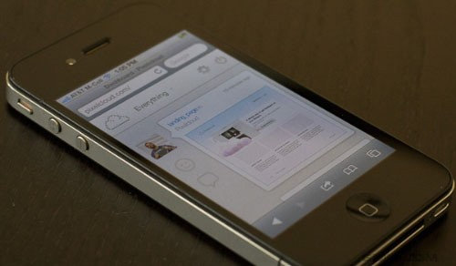
你应该想象这个趋势更像是一份单一的代码，完美地运行在所有环境下统一网页的设计中。响应式站点被经常想象为是向手机浏览器迎合，但那不是唯一的目的。你也可以拥有一个让浏览器窗口更大，可以让你的页面布局添加鲜艳的插图和图案的响应式站点。
这里的重点是思考站点设计作为一个动态和自然流体的单一画板，css3媒体查询允许开发者在有限的或者扩展的屏幕之上自定义布局，用这个来增加你的优势同时也看看其他设计师是如何实用它的。
2.视网膜支持
随着响应式支持网站布局，同时我也发现在为视网膜设备建站的人有明显的增加。苹果第一次实践这个想法是在iphone4上，从那以后苹果在他们的其它设备包括ipad和一些macbooks上也应用了视网膜屏。
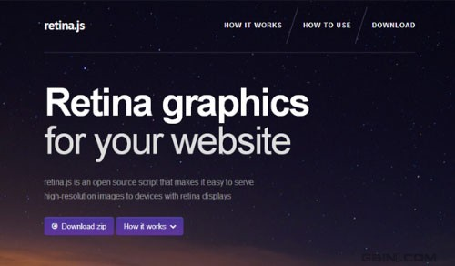
视网膜屏像素基本上是其他任何普通LCD的两倍，虽然它们有相同的物理尺寸，但是视网膜屏可以使用两倍的数字像素来适应相同的物理尺寸。
这意味着“像素完美”的网页设计师将要制作两套图片格式.以此来支持视网膜设备。首先你需要使你的样本图片两倍于普通图片的分辨率，接着保存标准版本的图片。大分辨率的图片将会在标准分辨率的屏幕上缩小并且在视网膜屏上看上去更鲜明。
我最喜欢的一个响应式网页设计工具retina.js,它是一个javascript库，用来使你的用户无论何时在使用视网膜设备时，自动的展现视网膜图片。
尽管它不检测CSS背景图片，但它依旧是用来避免在媒体查询里写下所有情况代码的最方面资源.
3.固定的头部条目
使用CSS position:fixed属性是使你的头部条目固定在网站最好的方法。当用户往下滚动你网页的时候，此方法会提供一个静止不动的导航和一个回主页的路径。这个趋势已经有一段时间，但是我们现在才看到它全部的力量。
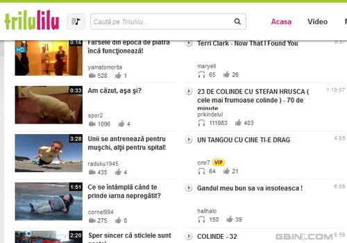
因为他们几乎可以工作在任何网站，所以看上去很有趣。它们包括社交网络、博客甚至有设计工作室又或者是私人公司。这种设计非常的流行并且看上去和许多布局很搭配。但是从美学角度看，这个固定的条目提供了一个减小操作网站距离感的特别用户体验。
4.大图片背景
摄影师或者摄影爱好者肯定很享受这种设计趋势。我已看过无数的案例来讨论使用超大图片来作为背景的这种想法。这是获取用户注意力极佳的方法并且当恰如其分的完成时会看上去很棒。
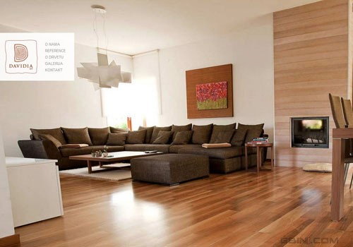
当大图赏心悦目的时候我就慢慢的喜欢上了它们，当你把这种大图做背景的想法融合进你的设计的时候，这样的设计技术，在市场上会使你的网站显得更专业。谈到这时我总会想到曾经很流行的Kerem Suer的设计作品，为每一个登到他网站的用户设计一个非常具有个性的背景图片。
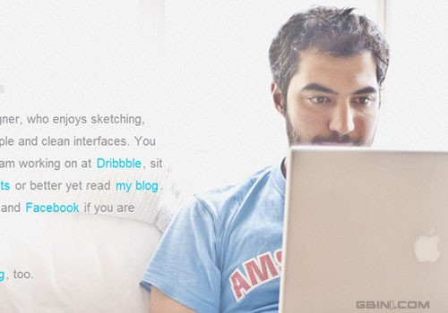
5.CSS透明
CSS3的新属性已经允许编辑网页上任何元素的不透明，这意味着你可以在不使用photoshop的情况下，在现代浏览器中实现透明。这种透明性的网页设计趋势最近在codrops上讨论带有一些非常生动的话题。
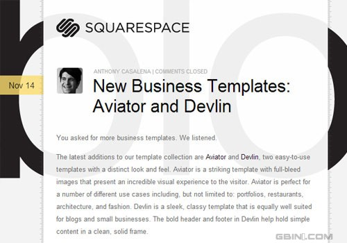
一个极佳的例子是在Squarespace Blog上，它页面中间的层给了一个background:transparent;属性,典型地它可以应用在生成一些其他平铺背景上，又或者设置内部元素当背景。
另一个来操作透明度的设计技巧是通过rgba()颜色语法，在css书写时你可以指定具体的红，绿，蓝以及透明度，所以使用rgba(255,255,255,0.6)会生成60%的不透明白色，这确定是一个设计趋势，所以在2013以及以后我们仍可以抱有期待！
6.极简的着陆页面
任何一个花一些时间调研市场的人都会明白网络销售是既简单又聪明的，你可以接触到世界上任何地方的消费群体，另外你还可以卖一些非实体产品，例如视频或有创造性的东西。
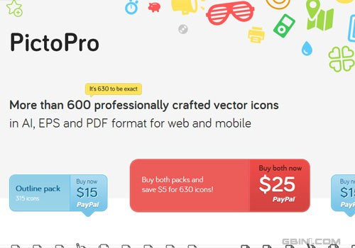
在网上创建一个简洁的着陆页面就是为了获取指引到你的产品或服务的引导线。这个新趋势奉行极简主义的信条：保持所有东西简单同时专注你的核心产品。
在PictoPro webpage上提供了许多精美的低价图片示例资源，这个页面使用矢量图标作为背景是相当灵巧效果，同时文本也容易阅读，事实上它是一个一次单击结算的流程，你不可能做的比那更简洁了。
7.数字快速响应编码
随着智能手机的充足导致QR（快速响应）应用程序的激增。它代表Quick Response Code，始于早期的UPC二维码,你可以从餐馆通知事件的地点和汽车销售好多地方发现这种标签。
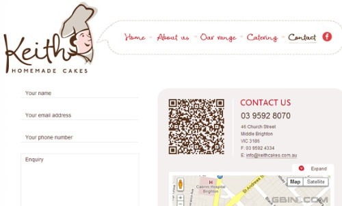
但是最近我发现一些站点巧妙的将编码融入到设计中，因为它们经常出现在打印中，所以你很少注意到它们。但是随着时间的增长，由于数据传输越来越快，QR 编码会成为流行趋势。你可以在Keith Cakes联系页面看到此技术鲜明的例子。
8.社交媒体标记
网络营销是网站成功或失败的基本决定因素。社交化媒体和病毒式营销在许多不同的网站爆发，Digg 曾经是这一领域的霸主，但是现在已经被对手Reddit所取代。但是这并不意味着仅仅有两个可以在线分享心情故事的网站资源。
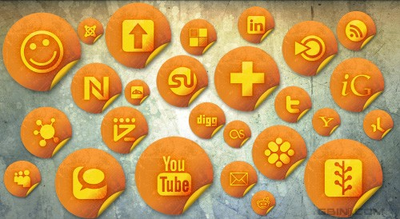
你可以在任何社交社团上检索到分享标记，这样就有可能发现很好的解决方案。你可以把这些分享标记放在你的布局的任何地方。这种设计对于一些急迫想在Facebook，Twitter更或者是LinkedIn上分享内容的读者或粉丝也是有积极一面的。
下面我列出了一小部分社交媒体标记，你可以在自己的网站布局上尝试一下。
§ StumbleUpon Badges
§ Google +1 Button
§ Pinterest Buttons
§ LinkedIn Share Badge
§ Hacker News Vote Badge
§ Dzone Vote Buttons
§ Free Social Media Icon Sets �C Best Of
§ 100+ Remarkably Beautiful Twitter Icons And Buttons
9.详细的插图
新的设计趋势都是为了抓住和控制某人的注意力，我个人感觉插图能出色的完成此任务。但问题是找一位能做出如此完美无瑕艺术品工作的设计师，并且还可以教自己。
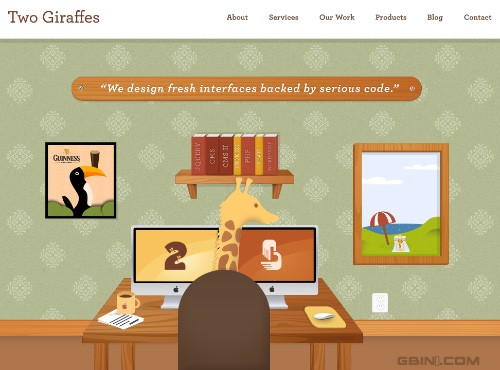
插图可以应用在多种各式各样的方法中，以此给你的网站带来不同的感受。看看互联网，你就会发现许多画廊和插图网站都集中在电子插图上。你能看到这么有美感的工作最终完美的融入网站的品牌中，MailChimp或许是拥有黑猩猩邮递员商标最具代表性的例子了。
10.无限滚动
无限滚动加载至少存在许多年了,但是此技术直到今年才成为主流，我想在2013年还会继续。
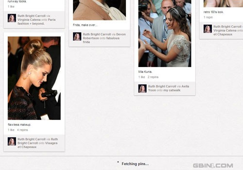
Pinterest已经为他们的布局采用此加载技术并且运行的很完美，你可以搜索任何东西而且当你往下滚动时结果页会不断地加载，分页基本上不是问题，甚至不会对用户体验造成影响，讨论为简约设计。
但是另一个非常棒的或许是我最喜爱的例子是在Tumblr。你可以发博客同时可以摘录所有出现在你面板上你跟随人的照片。所以当你登陆之后所有最近的帖子会出现且无线的往下滚动页面。
这是一个极好的技术，可是并不能应用在每一个布局上。但是对于能适应此方法的网站从视觉和表现上都相当惊人。
11.主页特点巡回
在网上新产品通过滚动图片展示和示例视频都很常见。着陆页和新建页面经常尝试使用一些甜头来诱惑潜在的客户。如果你知道如何在网站上将东西构造的很好，它的作用将会很明显。
回顾2012年我会说此趋势最好的例子是MediaFire’s homepage.这个页面的整个头部是在一系列幻灯片之间滚动。每一个幻灯片都表述了你可以在MediaFire做什么同时阐述了和其他网站的对比他们的特点。帮助此例子表现突出的依旧是他们使用的大插图和图标。这是一个不适合全站使用的趋势，你仅仅可为某些产品以此来吸引更多的关注。
12.滑动的网页面板
过去当flash和Actionscript很盛行的时候，滚动的网站很火。而现在，动的效果已经可以通过Javascript和JQuery实现，并且依次影响了设计师建设网站的方法。我是偶然喜欢上滚动面板技术并且希望在2013年看到更多。
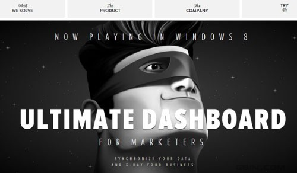
立马点击，你或许会想CaptainDash是一个普通的网站，可是当你通过导航点击的时候，你会发现每一个页面都是通过左右连续推动加载的。这些动的效果并不总是对手机用户是个好的兆头。
若你可以通过响应式布局来处理它们，又或者有可供选择的手机站点，滚动效果在手机上就会很酷，值得一试！
13.移动导航切换
当谈到响应式设计时，最难的问题之一是如何创建一个靠谱的导航。你希望能给用户对你所有重要的链接以直接的访问，而不要淹没在页面中而使其难以辨读。先保持导航隐藏当需要时再出现也是一个很好的点子。
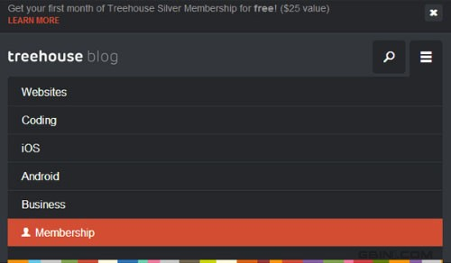
进入移动导航切换菜单漂亮的设计趋势，Treehouse Blog是极少数将此技术在智能手机和pc端浏览器表现都很耀眼的例子之一。但是有许多网站和工作室在他们的个人响应式布局中使用了此趋势。
我所喜欢的导航切换是你可以以多种方式设计导航，你可以有从头部到底部的导航或者往下滑动，又或者左右推动内容。设计师有许多玩的选择但是对于UI实验需要更多的时间。
14.全屏排版
前面我提到过使用超大图片作为网站布局的背景，这种趋势依旧可以延伸到文字排版上，设计的你网站文本完全适应浏览器。一些用户可能感觉到很恼火，但是如果布局对于超大文本很合适这也不是常有的事。
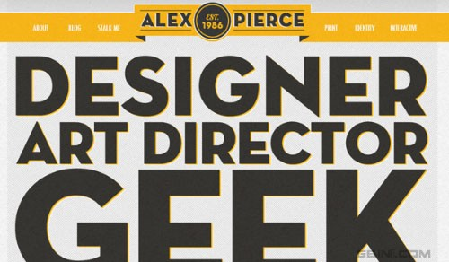
Alex Pierce有一个很棒的专注于排版布局的网站，你可以通过CSS3的属性看到富文本效果。另外这个网站很容易被导航以及许多其他页面的元素显示的也是超大的。
独一无二的大字体样式可以像超大图片一样突出，同时我确定在新的一年我们会看到这种设计会得到更多的评论。
15.编程接口和开源
开源软件已经存在数十年了同时自从它存在就改变了网络。但是在2012年里我注意到有更多的关于开源软件涉及到网页组件、布局、动态效果。典型的是我们可以谈论免费网站模板，布局或者像WordPress的CMS软件。
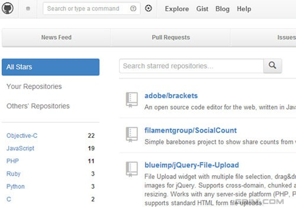
像Github这样开放的编程接口和资源不仅允许设计者进行原型布局，还可以在页面上制作动画和效果。在网络上jQuery事实上有无数的插件供免费下载使用。
说真的我不希望开源项目在任何时期发展缓慢，现在就是该开始并且促进在创建网站领域知识的时候。
16.深度盒子阴影
我在2012年的文章中已经讨论过CSS3的盒子阴影，这种趋势已被证明是非常准确的。事实上，我经常希望看到在现代网页设计中加入盒子阴影效果。这种效果看上去很神奇，它们从来不会偏离美学除非过度使用。
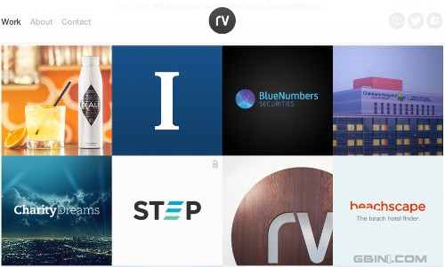
我相信在前些年设计师遇到的问题源于盒子阴影太难而不容易实现。往前推几年，这种效果需要Javascript或者在photoshop中制作阴影背景，而现在阴影盒子可以在CSS中使用几行代码来生成。
我将会在整个2013年留意盒子阴影效果。我想此效果已经在设计社区根深蒂固，现在更该关注的是谁最有创造力的实现盒子阴影效果。
17.CSS3动画
CSS3 带有相关浏览器前缀的transition属性允许CSS实现像Javascript一样的动画效果。设计师现在能以不同的CSS属性实现动画效果。我有许多恰当使用过渡效果的hover effects and form input fields例子。
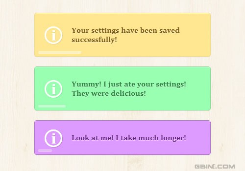
另外一个优秀且激动人心的例子来自CSS alerts tutorial on Codrops。提示你如何为各种不同的动画设置时间。
我对新的设计师推动不通过脚本来实现的动画充满信心。
18.垂直导航
当我第一次注意到不同的网站使用此趋势的时候，并不是很感兴趣。可是在过去的一年里，我看到越来越多的设计师创造了完美的垂直解决方案。当此布局被正确的完成，垂直网站布局可以容纳充足的内容同时具有好的设计体验。
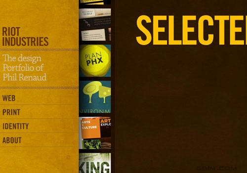
Riot Industries的组合对于新设计师是个很好的例子。查看一下导航链接是如何工作的，在移动上去是整个组合动的效果是如何实现的。边框纹理确实展现了一个左右两列分开的线。
纹理效果同样在另一个垂直布局上出现，例如CSS画廊Design Bombs.
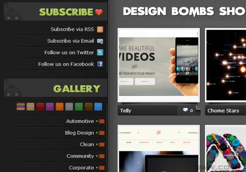
19.单页面网页设计
单页面设计是一个很大的话题，覆盖了许多不同网站分类。显而易见自从万维网创建单页面网站就出现了。但是最近几年这种趋势变成了一种更加自然的用户体验。
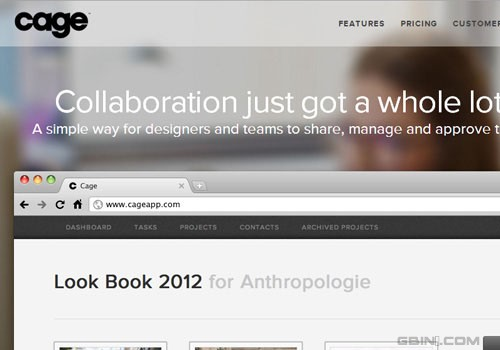
我想为Cage App设计的网站或许是这篇文章中列出的例子中最棒的一个。他们利用单页布局通过水平布局鲜明的展现出内容。但是你还会注意到页面的顶端有一个模糊的背景图片效果。
随着你往下滚动页面，导航条一直固定在你的浏览器顶部。合并其他的网页设计趋势到单页面布局里面是吸引用户注意力和创建一个迷人的网站的解决方法。
20.圆圈元素设计
这一圆圈设计趋势在网站布局是比较新的且已经被赋予了很多的关注。设计师喜欢圆圈设计，因为它们干净、整洁，一般适合任何块状布局。你可以构建你的圆形或者把你的页面元素更改为圆形设计（例如用户头像、分享按钮、发表日期等等）。
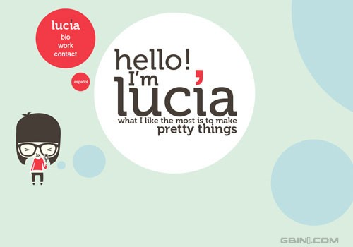
Lucia Soto组合基本上是圆形网页设计中很棒的一个例子。这个网站是动态创建的所以你得在页面上水平移动不同的片段。您也将注意到一些可爱的向量艺术品以及星罗棋布的间隙。Web设计师渴望这些额外的花絮在页面布局上,因为他们透露出唯一性。
你可以在Site Optimizer主页上发现一个简单的例子，它使用了圆形页面设计作为他们服务的信息卖点。
结束语
当创建数字产品时，用户界面是最复杂的话题。尝试着使导航和内容样式获得成功的用户体验。这些设计趋势目的是给设计师指明正确的方向。
我希望你可以接纳其中的一些想法并且思考他们如何影响如今的网站。你可以在较小的环球公司和其他所有网站上找到这些新兴的趋势。如果你正在提醒思考这一曲线并且希望分享2013年设计趋势观点。就在文章下面的讨论区留下您的评论。


 网友投稿
网友投稿- 我们一直在进步